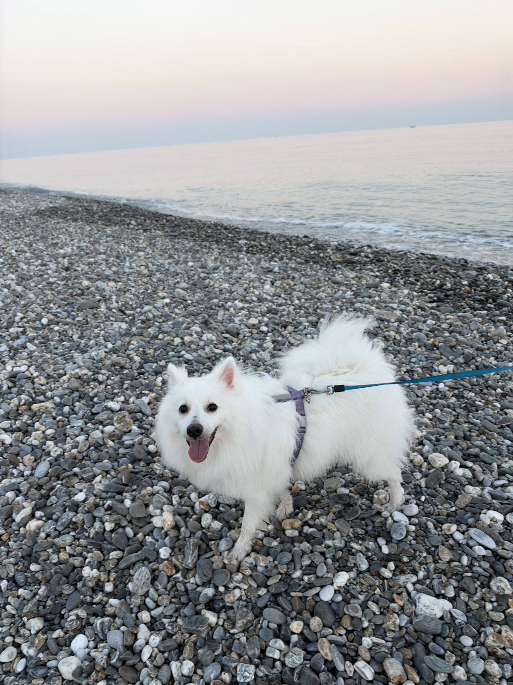
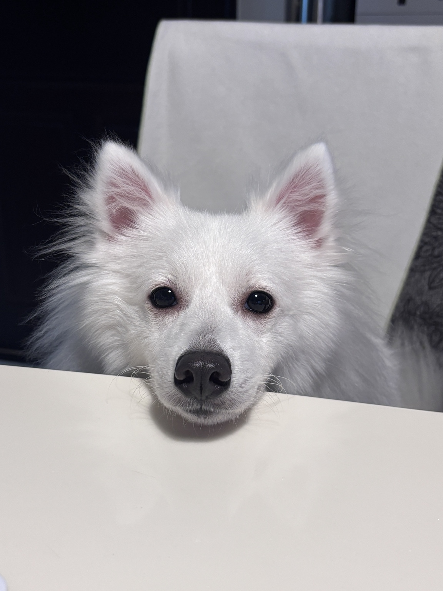
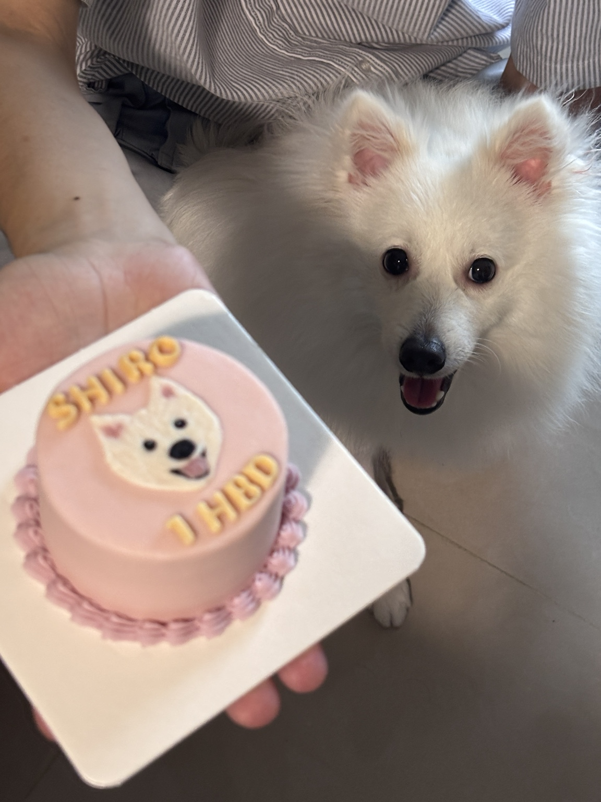

狗狗行為解密：讀懂肢體語言與情緒訊號
給零基礎飼主與愛狗新手的非語言溝通科學手冊

🎯 本堂課三大核心學習目標
- 破解 5 大日常行為迷思：破除「搖尾巴等於開心」、「打哈欠只是愛睏」等單一化解讀。
- 拆解全身關鍵訊號：學會辨識眼睛（鯨魚眼）、耳朵、長唇、重心與被毛變化。
- 掌握溝通升級階梯：在「輕聲耳語」階段看懂狗狗的求救，及時化解衝突並預防咬傷。
💡 科學評估黃金法則
狗狗無法使用人類語言，其肢體語言是連續流動的情緒反映。解讀時切忌斷章取義，必須同時評估「全身姿勢、環境刺激、事件情境與個體基準線」。
狗狗如何透過身體說話？
犬類社交溝通的核心動機：拉近關係 vs. 拉開距離
🟢 拉近距離訊號 (Distance-Decreasing Signals)
溝通目的：「我感到很安心，歡迎你靠近或一起玩耍。」
- 邀玩鞠躬 (Play Bow)：前肢壓低貼地、臀部翹起歡快扭動。
- 柔軟體態：身體像煮熟麵條般放鬆晃動，四肢平均承重。
- 面部柔和：眼神呈自然杏仁眼，嘴唇平順微張呼吸。
🔴 拉開距離訊號 (Distance-Increasing Signals)
溝通目的：「我感到緊繃或害怕，請停止靠近並給我空間。」
- 主動抽離：偏頭移開視線、主動轉身離開、抬起前爪猶豫。
- 微表情警戒：非進食舔唇、非睡意打哈欠、嘴巴突然緊閉。
- 防禦威脅：身體僵直凍結、鼻紋緊縮、低吼甚至露齒。
犬隻行為光譜：任何施壓都會使指標向警戒端位移
破除迷思：搖尾巴一定代表開心嗎？
尾巴不是快樂指標，而是情緒能量與激發度（Arousal）的擴音器
全身鬆弛擺動 (Loose Wag)
高度與軌跡：尾巴處於脊椎水平線附近，擺動寬廣而有彈性，甚至帶動臀部腰部一同搖擺。
情緒意涵：真正放鬆、友善親和與喜悅。
高豎垂直抖動 (High Stiff Wag)
高度與軌跡：尾巴垂直高舉，肌肉極度緊繃，僅在尾尖短促、快速或緩慢僵硬抖動。
情緒意涵：高度警覺、自信主導或威脅警戒！千萬不可伸手觸摸。
夾尾與低垂 (Tucked / Low Tail)
高度與軌跡：尾巴緊緊向下收緊，甚至深夾於兩後腿之間貼緊腹部。
情緒意涵：恐懼、受挫、缺乏安全感，企圖縮小體積避險。
微表情解析：眼睛、耳朵與嘴巴
臉部肌肉張力能最早透露狗狗心中的焦慮與舒適度

👀 眼睛：柔和眼 vs. 鯨魚眼
鯨魚眼 (Whale Eye)：眼球轉動但頭部偏開，眼周外側露出一大片眼白鞏膜。代表狗狗正感到威脅或極度不安。
散瞳 (Mydriasis)：正常光線下瞳孔漆黑放大，代表交感神經急性激發。
👂 耳朵：自然耳位 vs. 緊繃後縮
向前直立代表好奇專注；向後緊貼 (Pinned Back) 且面部緊繃，常為恐懼或防禦表現（需對照該品種天然耳型）。
👄 嘴巴：放鬆微張 vs. 長唇緊繃
長唇 (Long Lip)：嘴角肌肉用力向後收縮拉長，面部出現鬼臉皺褶。原本喘氣的狗若突然閉上嘴巴，是高度警戒的急性警訊！
打哈欠與舔嘴唇：神奇的「安定訊號」
為什麼不睏會打哈欠？認識犬類的自我調節與和平外交語言
🕊️ 什麼是「安定訊號」？
由北歐犬類行為學界與 RSPCA 強調的核心概念：當狗狗面對環境壓力時，為了平息對方怒氣、安撫自己緊繃的神經，所釋放出的社交緩衝語言。
👅 舔唇 (Lip-licking) & 舔鼻
在周圍沒有任何食物的情境下，狗狗頻繁以舌尖快速刷過鼻頭或嘴唇。這是微壓力與動機衝突的自我重設信號。
🥱 壓力型打哈欠 (Stress Yawning)
並非想睡覺！當人類緊緊抱住狗狗、俯身靠近拍照或受訓被斥責時，狗狗頻繁打哈欠是在表達：「我很有壓力，請冷靜一點、給我一點空間。」
⚡ 轉移行為 (Displacement Behaviors)
當狗狗面臨「想逃又不能逃」的心理困境時，會做出看似不合邏輯的動作，例如：突然低頭狂聞地面、瘋狂抓癢。這是在轉移焦慮能量，絕非「裝傻」或不專心！
🚿 全身乾燥甩毛 (Shake-Off)
在身上完全沒水的情況下突然像洗完澡般用力甩動全身。這代表剛剛的一段緊繃互動剛結束（如被陌生人摸完），神經系統正在進行「壓力重設 (Reset)」。
溝通訊號升高模型：從耳語到吶喊
Dogs Trust 經典溝通階梯：咬傷幾乎從不是無預警發生的！
🪜 壓力升級的三大階段
舔唇、打哈欠、偏頭避開眼神、抬起單爪、緩步離開
定格凍結 (Freezing)、死盯不眨眼、背部炸毛 (Hackles up)
鼻紋緊縮、低吼 (Growling)、露齒 (Snarl)、空咬 $\rightarrow$ 咬傷
🚨 重大警訊：為什麼絕對不可處罰低吼？
低吼是狗狗最後的和平警報器！
如果飼主因為狗狗低吼而打罵牠，狗狗體內的恐懼並未消除，但牠學會了「發出警報會挨打」。
這等於拆除了火災警報器——創造出一隻下次面臨壓力時「無預警直接咬人」的危險犬隻！
📚 經驗跳級咬傷機制
若狗狗每次發出「耳語」（如舔唇）都被忽視，唯有作勢咬人時人類才會後退，狗狗便會學會「跳過耳語，直接大喊防衛」。
全身姿勢與情境判讀四大維度
不要只看單一部位！學會將線索放回完整情境中綜合評估
1. 全身姿勢 (Whole Body)
- 重心前傾：自信、警戒或進攻預備。
- 重心後壓：恐懼、逃避或防衛退縮。
- 定格凍結 (Freezing)：AAHA 特別提醒，一動不動常被誤認為很乖，實為隨時可能反撲的臨界狀態！
2. 環境與誘發物 (Context)
- 誘發物堆疊 (Trigger Stacking)：皮質醇需要數小時代謝，散步吠叫＋洗澡梳毛＋孩童尖叫，微小刺激也能突破閾值引發爆發。
- 溫熱散熱 vs. 壓力喘氣：涼爽室內的急促喘氣是心理警訊。
3. 基準線與就醫 (Baseline)
- 個體基準線：垂耳犬與立耳犬的自然耳位截然不同，需以無壓力時為對照。
- 突變優先看獸醫：若原本溫和的狗突然易怒或抗拒觸碰，RSPCA 強調必須先排查關節或身體隱形疼痛！
實戰演練：狗狗情緒解碼測驗
檢測你的觀察力！點擊選項即可即時獲得專業行為學解析

主人應如何給予狗狗安全的守護？
成為讀懂狗狗的盟友：建立信任、尊重邊界與環境管理
1. 看懂耳語，及時後退
當看到狗狗舔唇、撇頭或打哈欠時，立刻停止前進或撫摸動作。給予狗狗「選擇權 (Choice)」，永遠不要強迫互動。
2. 設置專屬避風港 (Safe Space)
在家中建立安靜、無風且不受打擾的專屬床位。全家人都須嚴格遵守「狗狗回窩就絕不打擾」的鐵律。
3. 嚴禁打罵壓力行為
因分離焦慮或恐懼出現的破壞家具或排泄失常，打罵只會加劇恐慌；面對低吼絕不處罰，低吼是保護人犬安全的警報器。
學習總結與 Wiki 知識庫總覽
本教學簡報完全編譯自 Karpathy 架構之持久化 LLM Wiki 知識庫
🎓 本堂課核心精華複習
- 非絕對化：沒有任何單一部位能單獨代表情緒，永遠看全身體態與脈絡。
- 尊重耳語：在狗狗輕聲細語時後退一步，就能預防 99% 的緊張與咬傷。
- 保護警報：感謝低吼，切勿懲罰警報器；異常突變先就醫排查病痛。
🔗 知識溯源架構 (Slide ➔ Wiki ➔ Raw Sources)
本簡報每一頁皆可在本專案的 wiki/ 知識庫中找到詳盡論述，並可點擊追溯至五大權威文獻中繼資料。
🏛️ 五大權威科學文獻來源庫
- src-01：ASPCApro 犬隻肢體語言專業指引
- src-02：英國皇家防止虐待動物協會 (RSPCA) 行為解讀
- src-03：英國人民病畜藥房 (PDSA) 犬隻壓力預防衛教
- src-04：英國信託救犬會 (Dogs Trust) 溝通升級模型
- src-05：美國動物醫院協會 (AAHA) 臨床行為管理指引
*註：原 VCA 來源因 AI 改作條款限制，已依合規程序封存留存審計，未進入本簡報與知識庫。